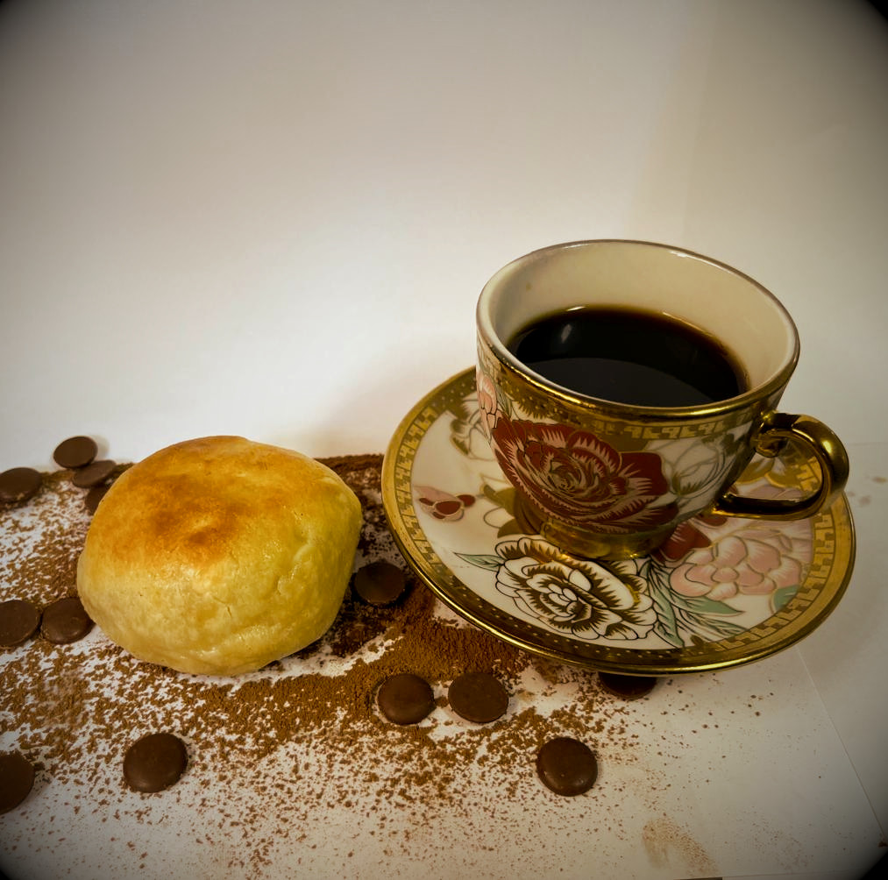
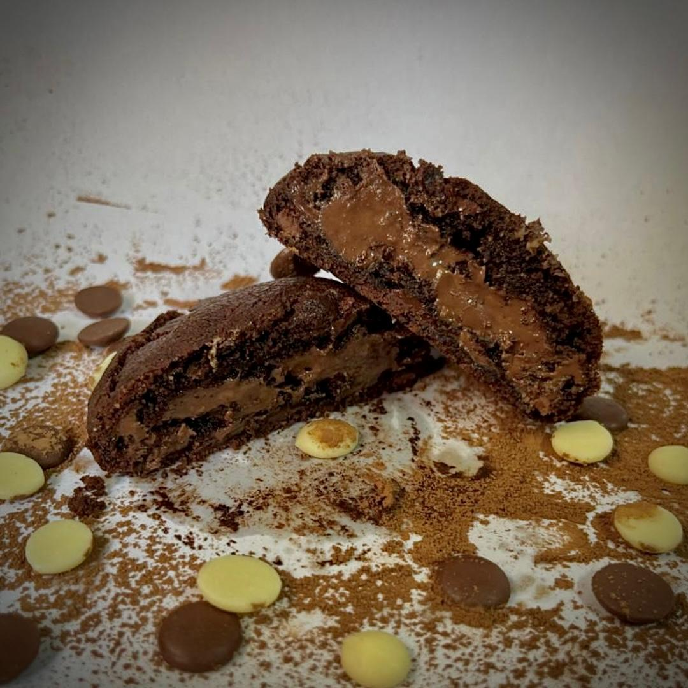
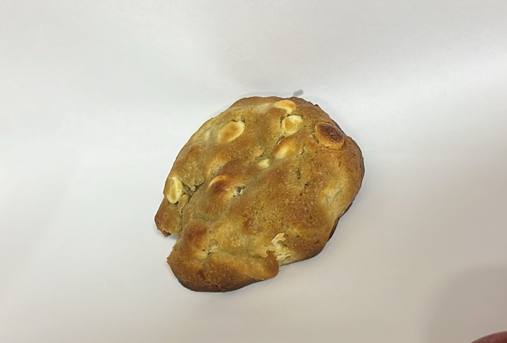
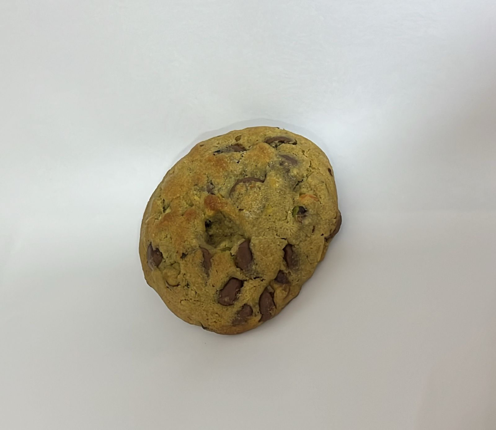
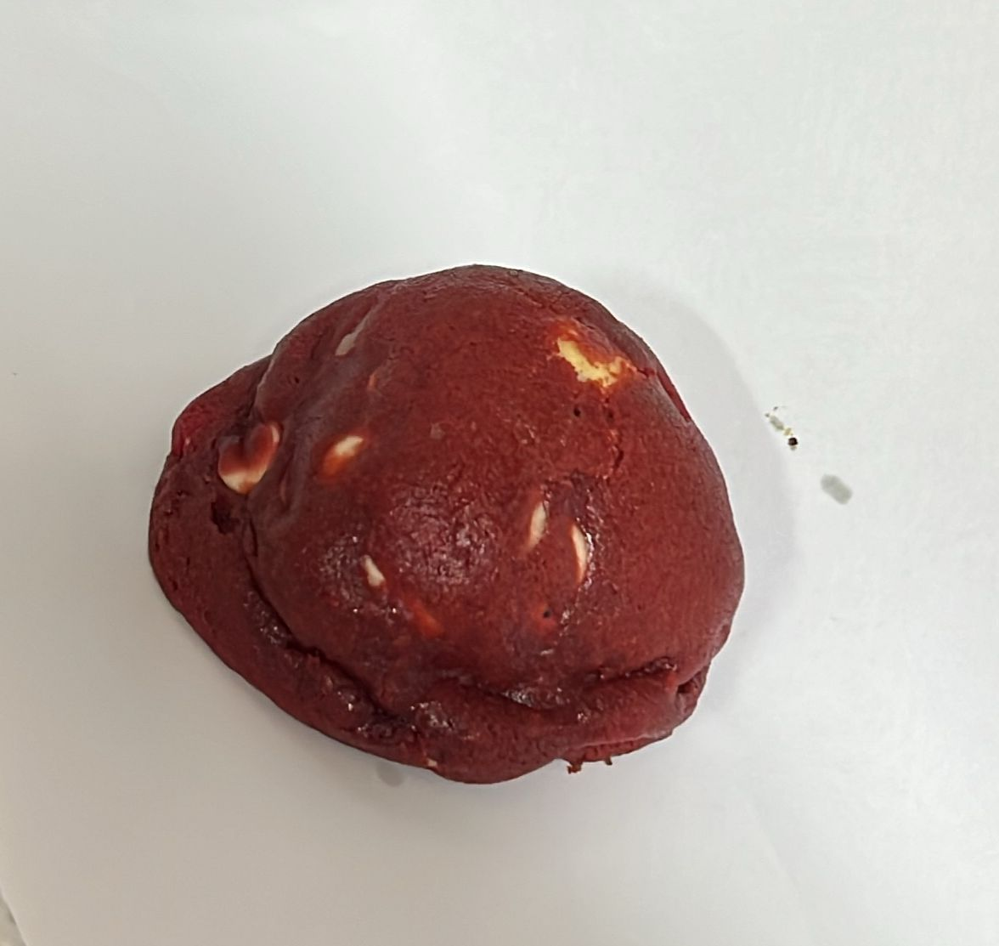

Meu nome é Juceli, tenho 50 anos e sou de Suzano, uma cidade que carrego no
coração. Sou biomédica, veterinária e, acima de tudo, uma verdadeira amante da culinária. Adoro a
sensação de criar algo novo, de transformar ingredientes simples em experiências inesquecíveis. Para
mim, cozinhar é mais do que preparar pratos — é uma forma de conectar pessoas, de criar memórias e
de espalhar amor através dos sabores.

ORIGEM DO NEGÓCIO
A cozinha sempre esteve presente na minha vida, desde pequena,
quando aprendi os segredos dos sabores com minha avó, uma mulher
sábia e cheia de amor para dar através dos seus pratos. Ela me ensinou
que cozinhar é um gesto de afeto e que, na cozinha, temos a liberdade de
reinventar, criar e, acima de tudo, compartilhar momentos especiais. Foi
assim que,movida pela paixão e pela vontade de levar um pouco dessa magia
para os outros, nasceu o Cookies da Ju! Cada receita que
crio tem uma história, um pedacinho de mim. E com cada mordida, quero
que quem experimente sinta o carinho, a dedicação e a alegria que
coloquei em cada detalhe.

Cookie Chocolatudo
Preço: R$3,99 cada unidade
O Cookie Chocolatudo é a perfeita indulgência para os amantes de chocolate: uma
massa macia e assada com intensidade e aroma irresistíveis. Ele vem em versões
que agradam todos os paladares: recheado com cremosidade de Nutella, cacau 40%
para um sabor equilibrado, cacau 100% para os fãs de intensidade pura e chocolate
branco para um toque doce e suave. É mais que um cookie, é uma experiência chocolatuda! 🍫
Cookie de Churros (doce de leite)
Preço: R$3,99 cada unidade
O Cookie de Churros é uma explosão de sabores clássicos em forma de cookie: massa
macia e dourada, que remete ao sabor do churros tradicional. O recheio cremoso de doce
de leite completa a experiência, trazendo um equilíbrio perfeito entre
doçura e nostalgia. Cada mordida é um convite para se deliciar! 🥐✨

Chocolate Branco com Cream Cheese
Preço: R$3,99 cada unidade
O Cookie de Chocolate Branco com Cream Cheese é uma combinação
sofisticada e deliciosa: uma massa delicada e dourada, repleta de
pedaços de chocolate branco, que envolve um recheio cremoso de cream
cheese. O contraste entre o doce suave e o toque levemente ácido do
recheio cria uma experiência única e irresistível em cada mordida. 🧀✨

Cookie com Recheio de Pistache
Preço: R$3,99 cada unidade
O Cookie de Pistache é uma verdadeira obra-prima para os paladares mais
exigentes: uma massa macia e levemente amanteigada, repleta de pedaços
crocantes de pistache, que trazem um sabor sofisticado e único. Perfeito
para quem busca um doce equilibrado, com um toque de elegância em cada mordida. 💚✨

Cookie Red Velvet
Preço: R$3,99 cada unidade
O Cookie Red Velvet é pura elegância em forma de cookie: uma
massa macia e vibrante, com o tom clássico vermelho aveludado,
que derrete na boca. Para completar, pedaços de chocolate branco
dão o toque final, criando um equilíbrio perfeito entre doçura e
delicadeza. Cada mordida é um presente para os sentidos! ❤️✨